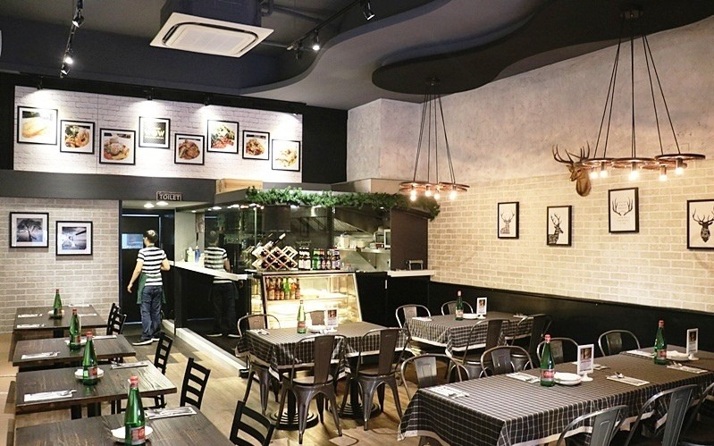

WOW Bistro旺.慢食
餐酒館 · 義大利

「旺．慢食餐酒館」位於捷運中山站4號出口約步行3分鐘即可抵達，狹長型的店面，環境空間不算大，算是蠻溫馨舒服的氛圍。 座位皆是四人方桌，建議前來用餐先訂位，不過整體的用餐環境很有質感而且優雅又舒適，很有典型歐式餐酒館的氣派。 如同店名，希望各位食客能在WOW Bistro慢慢「品味」一頓飯，並和親人朋友聯繫感情。

所謂慢食，不是指慢慢吃，而是一種新的飲食哲學。 讓用餐者感受每道料理上桌時的香氣，欣賞擺盤的色彩和美感，品嚐食材的搭配變化和味蕾層次轉變，也能從中體會烹調者的專業與用心。 選用安全安心本土季節食物、堅持新鮮烹調，就像對朋友般的殷情款待。

WOW Bistro旺.慢食餐酒館，用心烹調，使用當地食材、適量供應不浪費，找尋台灣在地、深具特色的海島食材。 提供義大利麵、燉飯、排餐，及酒品、咖啡、甜點等美酒佳餚。菜單一開始寫滿餐廳用的食材原料品牌，以及安全認證的國產及進口優質食材，堅持食材的新鮮烹調，堅持餐點的安全把關。 相信每個人都應該能享有優質，乾淨和公平的食品。